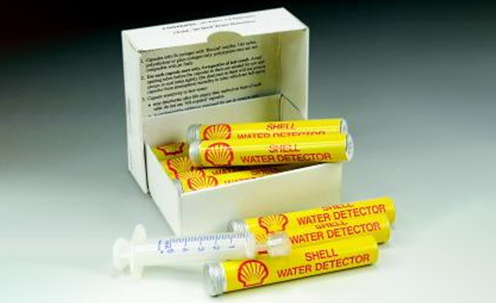

Session 4.2
Interlock System Specifications
Types of Contamination
4.1 Adventitious Materials
4.1.1 Water Contamination
4.1.2 Solid Contamination
4.1.3 Micro-Organism Contamination
4.2 Incidental Materials
4.2.1 Product Contamination
4.2.2 Surfactants
4.2.3 FAME

- Solid or liquid contaminants that can be picked up by aviation fuels during storage and handling (including in refineries), and distribution.
- Adventitious materials are heterogeneous and can be removed from aviation fuels by appropriate settling and filtration/separation
- Examples - rust, dirt, free (undissolved) water, salt and microbiological growth
4.1 Adventitious Materials
4.2.1.1 Water Contamination
- A mixture of water and jet fuel in any form is undesirable and potentially hazardous.
- Entrained or generated water in the fuel system, when combined with very low temperatures, may result in ice formation within the aircraft fuel system
- the water content must be kept below tolerable levels
- Use of Fuel-Oil or Fuel-Air heat exchangers to prevent ice build-up on fuel filters
- Use of protective pump mesh strainer with bypasses ensures uninterrupted fuel flow to the engine in the event of ice build-up and mesh strainer blockage.
- Use of electric fuel line heaters in the pipes and tanks in the fuel feeding system.
- Use of anti-icing additives (FSII) for extremely cold weather conditions
- jet engines are capable of burning a mixture of fuel and water
- Fuel may pick up free water when fuel is moved via pipeline networks, rail, ship, road or a combination of these methods
- Fuel may pick up free water during its transit and storage through the transport network
- Condensation of water from moist air to the tank walls in vented fixed roof storage tanks
- At low temperatures, precipitation of dissolved water from the fuel itself
- Water left behind after cleaning operations in tanks or transport vehicles due to poor personnel procedures
- Rain water entering through the seals in poorly maintained floating- roof tanks
- Rain water entering through hatches of fuel storage tanks
- Water can be present in fuel in three forms:
- dissolved in the fuel,
- suspended in fuel as water-in-fuel emulsions, or
- free water
- Dissolved water is invisible to the naked eye and is considered a constituent of jet fuel that vaporizes during combustion.
- Suspended water appears as a dull, hazy, or cloudy appearance that takes time to coalesce or settle down.
- Free water, being denser than fuel, forms a separate layer at the bottom of fuel tanks
- Suspended water and free water are regarded as fuel contaminants and are managed through rigorous Quality Control measures
- Jet fuel is considered saturated with water when it has dissolved all the water (H2O) molecules it can hold under certain conditions.
- For example, at 21 ◦C and atmospheric pressure, saturated kerosene-based fuel contains approximately 40 to 80 (water) parts per million (ppm)
- Dissolved water in Jet fuel is regarded as another fuel constituent and is not considered a contaminant as long as it is maintained in a dissolved state
- Dissolved water cannot be removed by any mechanical process such as settling, filtering or separation
- if fuel saturated with dissolved water is cooled, haze forms as water comes out of the solution, and some of this water may settle to the bottom of the tank or container
- Dissolved water cannot be detected by Chemical Water Detectors (CWD)
- Surfactants in fuel reduce the ability to settle
- Jet fuel may contain up to 100 ppm of dissolved water at 40 C
- Dissolved water drops out at approx. 1ppm per degree F/
- Fuel loaded at 15C, aircraft flying at -40C will precipitate about 13 litres for every 100,000 litres of fuel
- Jet fuel is hygroscopic in nature, and it attracts moisture from the air and surroundings
- The solubility of water in fuel refers to the degree to which water dissolves in fuel to make a solution and is dependent upon the chemical composition of the fuel
- Once the hygroscopic nature of jet fuel attracts moist air to its surface, the water molecules in direct contact with the hydrocarbon-based fuel go into the solution
- When the level of dissolved water exceeds the solubility limit
- Observed colour of jet fuel should be colourless to a light straw
- Colour should be similar to the previously acceptable test if any
- A cloudy or haziness condition in the appearance of the fuel sample suggests water contamination
- Slime on the bottom surface of the container or lacy substance is an indication of Microbiological Contamination
- The following definitions when inspecting a fuel sample for water
- Free Water: Is usually visible either as a cloud, haze, emulsion, droplets or in bulk amounts at the bottom of a tank or container.
- Free water will eventually settle
- Up to 30 ppm permitted by IATA
- Methods of chemical detection in everyday use
- Water Finding Paste/Paper - settled water only
- Chemical Water Detector (eg. Velcon Hydrokit and Shell Water Detector)
- Methods of chemical detection in everyday use
- Water Finding Paste/Paper - settled water only
- Chemical Water Detector or CWD (eg. Velcon Hydrokit and Shell Water Detector) Free Water :
- Large amounts of bulk water in tank bottoms can be detected by the use of water finding paste used with a thief rod or plumb bob
- However, this paste material will not react to water in low concentrations, such as in haze or cloud form
- Preferably a tank should be subjected to ‘fast-flush’ and any free water detected by means of water finding paste or paper Remember:
- A sample which appears to be fuel may not be fuel but entirely water. It cannot always be detected by feel, smell or appearance
- Use of a chemical water detector is necessary because often free water is not visible even at concentrations in excess of 30 ppm 
- Tank Design is the key to the removal of settled water
- Cone down bottom
- Low point drain of sufficient diameter
- Fast flush device
- Fixed roof
- Floating suction
- Tanks for Jet Fuels should be designed in ways which let nature do the work for us
- The most common methods of removing free or emulsified water are through
- settling in tanks and
- by filtration, using
- filter water separators
- Sand
- Dust
- Dirt
- Rust
- Fibers
- Various types of oxides
- Rubber particles, etc.
- Nature
- Particulate matter from sub-micronic fines to coarse grains and flakes
- Source
- Catalysts from manufacturing processes
- Loss from the surface of tanks and pipelines
- Detergent action of Additives on surfaces
- Effects
- Filter blockage, fuel degradation and engine wear
- Detection
- Visual examination of samples
- Short filter life, high Millipore or Particle Count ratings
- Remedy
- Lined tanks and lines, non-ferrous materials in equipment design
- Settling times
- Filtration
- Rust is generally the leading source of particulate contamination.
- Frequently the sand or dust could also be present
- The main source of this kind of contamination is erosion and corrosion of container surfaces, pipes, fittings, pump cavity erosion and any other source which comes in contact with the fuel.
- A regular inspection and maintenance procedure should ensure clean reliable fuel delivery at all times.
- All precautions should be taken to keep the fuel system clean from external contaminants when conducting maintenance and inspection of the entire fuel supply system.
- Rubber particles from deteriorated hoses and gaskets.
- Dust, dirt and sand are drawn in through vent pipes and open hatches.
- Fibers from wiping rags or damaged filters
- Insoluble valve lubricants
- Filters
- Fuel pumps
- Parts of an aircraft engine causing sluggish and/or erratic operation, excessive wear and, in extreme cases, in-flight engine shutdown
- Clean tanks per the recommended interval
- Sump solids from tanks and filters according to the established requirements
- Change filters at the recommended interval
- Water and solid contaminants can be removed or minimized by proper design of facilities
- These include provision of tankage to provide adequate settling, strainers, cyclone filters, micronic filters, filter separators and filter monitors
- Check the proper operation of floating suction mechanisms
- Micron is short for micrometer,
- a micron is one-millionth of a meter or .000001 meters or thousandth of a millimeter
- The minimum limit of the human eye’s detection is 35 - 40 microns depending on eyesight, lighting conditions and wakefulness
- Aviation filtration systems typically have a nominal rating down to 1 micron
- This is ten times smaller than white blood cells, pollen grains and bacteria, being in the size range of particles that are removed by surgical masks (1-3 microns)
- It is not possible to have a Perfectly Settled Tank because settling time varies from a few hours to months to years based on the particle size and type
- Table below provides a snapshot of the possible settling time of different particulate matters
- Particulate matter, excluding water, visible to the human eye (40 microns and above) settles down within 2 – 3 hrs Note:
- Settling times of the contaminants in a 10-metre-high tank of Jet A1 at 15°C
- Contaminants assumed spherical therefore have an L/D ratio of one
- Settling Time is the time required after receipt and cessation of in-tank mixing/recirculation and before shipment of product from a storage tank to provide adequate settling of solid contaminants and water
- Product Settling plays an important role in removing dirt and water to achieve a CLEAR and BRIGHT product and reduce the risk of microbiological growth.
- Settling time is designed to allow dirt (particulate) and free water to settle to the bottom of the tank and be removed by sump flushing/drain
- From the chart below we can see that the Tank is effectively settled according to Particle Count data and Karl Fischer water determination after approximately 6 hours and no further settling is occurring
- The results of samples after 2 hours do not show any variation means that the tank is settled
- Y – X = Zero means the tank is settled
- Z is some contingency which would be a fixed time
- Particulate matter, excluding water, visible to the human eye (40 microns and above) settles down within 2 – 3 hrs
- Storage tank design plays a vital role in deciding the settling time
- Storage tank design plays a vital role in deciding the settling time of tank
- When the tank design for both DIRECT and INDIRECT delivery tanks does not meet the requirement of delivery filtration, floating suction, internal lining, cone down bottom with sump
- A reduced tank settling time may be applied but as a minimum subject to the following:
- Each of the Upper, Middle and Lower samples from the tank is tested to confirm water and particulate content requirements are met as follows:
- 14 max for 14 microns and
- 13 max for 30 microns (deemed equivalent to 1.0mg/L)
- Chemicals and compositions that can occur in aviation fuels as a result of refinery production, processing, distribution, or storage.
- Incidental materials are homogeneous and cannot be easily removed.
- In refinery processing (and in multi-product distribution systems), contamination of aviation fuel with trace levels of incidental materials is unavoidable from a practical point of view
- Examples – are refinery process chemicals, FAME (biodiesel), and copper or other metals in soluble form.
- Contamination is the presence of adventitious or incidental materials in excess of specified limits, or by mixture with other fuels
- Usually results from the inadvertent mixing of different petroleum products. Such as traces of additives and other ‘polar’ material or gasoline mixed in with jet fuel or FAME
- This type of contamination affects the chemical and physical properties of the fuel and can generally be detected by a density determination
- Specific laboratory tests such as the Contamination and Recertification Tests provide a higher level of certainty when product mixing is suspected
- Nature
- Source
- Effects
- Identification
- Remedy
- Polar or polar group containing (detergent like) compounds frequently found in jet fuel.
- These compounds are of concern because they have a disarming effect on elements used in filter water separator
- Surfactants cause water and particulate matter to remain in finely divided suspension in a fuel
- Surfactants tend to accumulate on the surface of the coalescer elements in a filter separator thereby "disarming" the unit and reducing or destroying its capability to coalesce and remove any water
- Very small quantities of surfactants in a fuel (as low as 0.5 ppm) are sufficient to "disarm" a filter separator
- Aviation fuel may become contaminated with surfactants by picking up residual additives when the fuel is transported in equipment previously used for motor gasoline or diesel fuels if the standard handling procedures are not followed.
- Additives to combat corrosion, improve fuel system cleanliness and improve anti-icing properties present in gasoline and diesel are highly surface active
- Other sources of surfactant contamination are refinery manufacturing processes, unapproved cleaning materials, and grease on swivels which may leave residual amounts of surface-active material in the product
- Surfactants can be removed by water-washing, but this is not approved for jet fuel
- Most effective removal of surfactants is by filtration through CLAY TREATER vessels
- This clay material is highly porous; such treaters function because surfactants are more strongly attracted (adsorbed) to the clay than they are to the fuel and are thereby removed.
- Clay treatment is generally the only practical means of removing surfactants from jet fuel downstream of a refinery
- The recent introduction of biodiesel into many countries has created a new threat to jet fuel quality: FAME or Fatty Acid Methyl Ester
- FAME is derived from plant or animal materials and used as a blending component to produce biodiesel
- FAME may be present at mg/kg levels in jet fuel as an incidental material
- FAME can be present due to carry-over or cross-contamination within the common unsegregated fuel distribution system
- Supply chains where FAME may come into contact with jet fuel shall be subject to a Management of Change procedure to minimise the exposure and ensure it remains controlled within the specification limits
- ASTM D1655-15 Section 6.3 makes it clear that FAME testing is only required where there is a risk of contamination exceeding 50 mg/kg
- DEF STAN 91-91 jet fuel specification limits FAME content to less than 50.0 mg/kg
- FAME greater than or equal to 50.0 mg/kg are not acceptable
- However, on an emergency basis, up to 100 mg/kg of FAME is permitted in jet fuel by the airframe and engine manufacturers where FAME contamination has been introduced into part of an airport distribution system where it cannot be quickly segregated or isolated for remediation without halting airport refuelling operations
- multi-product transport systems that also carry gas oil/ diesel fuel or
- non-dedicated storage that may have contained gas oil/ diesel fuel
- FAME (Fatty Acid Methyl Ester) concentration shall be tested by an approved method
- The switching of road or rail vehicles from gas oil/diesel to aviation fuel is strongly discouraged
- Testing FAME concentration of jet is NOT REQUIRED for storage locations that receive and deliver jet via dedicated systems
Introduction
Aircraft fuel systems are designed to handle the formation of ice in the fuel system
Sources of Water in aviation fuel

Forms of Water Contamination in Jet Fuel
Dissolved Water or Invisible Water
Water Solubility in Jet Fuel
Contamination with free water is unavoidable
Evaluation of Water Contamination
Detection of Free Water
Free Water (Visible)
Chemical Water Detection
Removal of Free Water
Settled Water (Visible)

3.1.2 Solids Contamination
Solids may appear as:
Solid or Particulate Contamination
Solid or Particulate Contamination
Sources of solid contaminants
Rust and scale formed on the inside of pipelines and tanks.Effect of solids contamination
Solid contaminants can clog
Prevention of Solid Contaminants
What is a micron?
Contaminant Settling understanding the challenge
Principles Of Settling Time
i. A total water limit of 100ppm using ASTM D6304 Karl Fischer, or
ii. A free water limit of 30ppm max using a Chemical Water Detector
i. ASTM D5452 Gravimetric with a limit of 1.0mg/L, OR
ii. Automatic Particle Counting ISO Code of
i. Installing a microfilter conforming to EI1590 downstream of the tank and prior to any other filtration requirement as an additional barrier to prevent the risk of particulate transmission
Types of Contamination
3.2 Incidental Material
Incidental Material
3.2.1 Product Contamination
-Untested aviation fuel
-Non-aviation fuel
aviation fuel component - FAME
-Non-aviation fuel component - FAME
-Unapproved additive or excess of Approved additive
-Aviation fuel of a different specification, e.g. SPK (Bio-jet) or D7655 in Def.Stan. 91-91
-Poorly segregated storage or delivery system resulting in ‘cross-over’
-Pipeline mixing
-Product properties differing from Certified values
Out of specification product
-Regular sampling, inspection and testing
-Good system design giving full segregation and operational control
-Stock control monitoring
3.2.2 Surfactants or Surface-Active Agents
3.2.2 Surfactants or Surface-Active Agents
Removal of Surfactants

3.2.3 FAME
Types of Contamination
3.2.3 FAME
There are two main issues with the introduction of FAME into diesel fuel that impact jet fuel:
1. FAME is Surface Active and tends to stick to metal or glass surfaces.This creates new risks for cross-contamination where supply chains handle both jet fuel and biodiesel.
2. FAME is a Non-Hydrocarbon fuel component. The jet fuel specification states explicitly that only hydrocarbon components or approved additives are allowed
FAME testing is REQUIRED if Jet fuel is exposed to a multi-product system which contains FAME